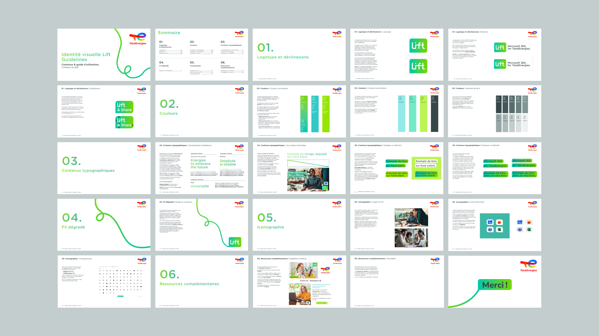

Lift est le nom donné à la suite Microsoft 365 chez TotalEnergies. Utilisée par plus de 90 000 collaborateurs, elle accompagne au quotidien l'adoption
et la maîtrise des outils numériques au sein de la compagnie.
À partir d'une identité existante, j'ai fait évoluer le logotype et conçu un système graphique
permettant d'unifier les nombreux supports de communication de Lift.
